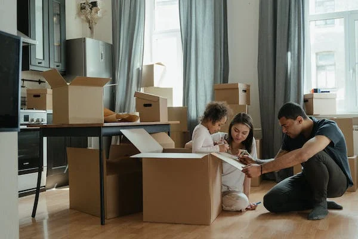

Our Removal Services
From packing shipping, storage, to pet location, short-or long-term home finding, orientation and language training, we do it all!
International Relocations
From door to door, we take care of all the handling, transporting and storing of your personal belongings to the highest standard.

Virtual Consulatations
Simple,virtual and convenient survey to get you on the move and make relocating simpler.
Secure Storage
If you need srorage at origin or destination of your International move, we provide highly Secure,best in class short or long term storage solutions